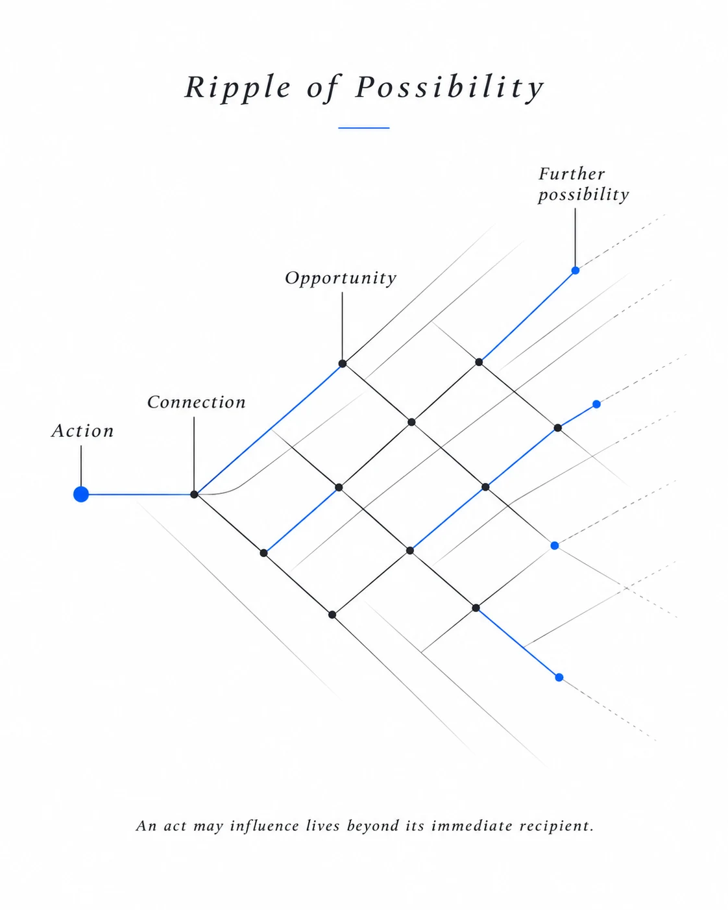

Shared Fortune
What we have been given room to do
A person sometimes discovers that something they consider ordinary is difficult for someone else to obtain. A familiar qualification, a reliable connection, enough time to explain a form, a place to study, confidence to ask a question: these can become opportunities when they are shared with care.
We may call such resources advantages, privileges, circumstances or good fortune. The words carry different histories, but each can help us notice that what is readily available to one person may be inaccessible to another.
Recognition need not begin with guilt. A person can be grateful for what has supported them and still take pride in their effort. The ethical question is what they do with the room they have been given.
We can think of some of this as shared fortune. It does not mean that luck passes from one person to another like money from one pocket to another. An introduction does not remove the giver's knowledge. Teaching a skill need not diminish the teacher's capacity. A useful connection can expand what several people are able to attempt.
Sometimes the sharing costs something: time, money, energy, attention, influence or risk. Those costs matter. Generosity cannot be judged fairly without considering the giver's means and obligations. No one should be expected to neglect a child, surrender essential income or exhaust themselves in order to demonstrate commitment.
The open door
A craftsperson entered a workshop because someone had once introduced them to its owner. They learned slowly, made mistakes and improved through years of practice. Their skill became real through work.
One afternoon an apprentice asked how they had begun.
“With work,” the craftsperson replied. Then they remembered the introduction. “And with a person who knew which door I should knock on.”
The apprentice asked whether a similar opportunity might exist for them.
“I cannot promise you a place,” said the craftsperson. “But if you would welcome it, I can introduce you to someone who may be willing to talk.”
The introduction led to a conversation. What followed remained uncertain. The craftsperson had not handed the apprentice a future; they had helped make an attempt possible.
The difference between a gift and a claim
There were three people in that introduction, not two: the person offering it, the person receiving it, and the stranger whose time was being requested. Each had a choice. We cannot offer another person's attention as though it belongs to us, nor promise an opportunity that only they can grant. Consent is part of what makes an open door a welcome one.
Sometimes the person offering help has more influence than the person receiving it: a teacher with a student, an employer with an applicant, a donor with someone in need. The greater that difference, the more carefully any expectation must be named. An ordinary courtesy becomes coercive when a person's access to safety, opportunity or belonging is made dependent on complying with an unstated wish.
The same is true of advice. A person may know how something worked in their own experience. That knowledge can be useful, but it is not a universal map. Economic conditions change. Institutions differ. Two people may face very different risks in making the same choice. Respectful help begins by asking what is wanted rather than assuming what ought to be done.
A gift can also become a means of control. A benefactor pays another person's fee and then expects obedience. A mentor offers support but demands access to private relationships. A donor insists that the people receiving help praise them publicly. These are not simply generous acts with unfortunate manners; they turn another person's need into an instrument of power.
The ethical view developed here places a boundary on such giving. Assistance should not purchase loyalty, belief, silence or gratitude. There are situations in which gifts and obligations should be agreed openly—for example, a loan, a paid service or a professional commitment. The problem is not that all exchanges are wrong. Undisclosed expectations can exploit the trust created by an apparent gift.
There is generosity that asks for nothing more. A supporter might contribute money toward a community project, ask how decisions will be accounted for, then decline public credit or special influence. The gift can be both freely given and responsibly scrutinised. A receipt and an honest report honour the purpose of the contribution; they do not diminish it.
Receiving also deserves dignity. We may be reluctant to accept help because we fear becoming indebted or being seen as less capable. But lives are interdependent. Someone who teaches today may need care tomorrow. A person who has little money may share knowledge, patience or companionship. There is no complete account of worth in which everyone must contribute more than they receive.
Sometimes a person cannot contribute anything that others can easily see. They remain part of the community. The moral value of their life does not wait for a useful act.
Imagine someone who attends a gathering while recovering from an injury. They need lifts, patience and space to sit quietly. Months pass, and the injury has not improved. Nobody should begin calculating when they will finally pay back the time spent helping. Their presence is not a loan secured against future usefulness. They are someone to whom others have chosen to extend care; if one day they can give, that gift will be freely theirs. If they never can, they have not failed the relationship.
The Act of Possibility
This book calls a voluntary outward-looking practice the Act of Possibility: an action taken, when reasonably able, to widen another person's opportunities or improve conditions for the wider living world.

It can be modest. Explaining a confusing process. Lending a tool with the recipient's agreement. Sharing trustworthy information about a course. Helping make a public space more accessible. Supporting an environmental restoration effort. Listening when someone needs to be heard rather than supplied with a solution.
The effects of help are not always visible. Some introductions lead nowhere. Some advice is declined. Some projects fail. A generous intention deserves consideration, but not an automatic claim of success. We can ask whether a contribution was welcome and useful, then learn from the answer without asking the recipient to praise us.
The practice is not a required quota. Confluent Humanism recognises strong duties not to exploit others or knowingly expose them to unjust harm; fair societies may also establish shared legal obligations through accountable processes. Beyond these, service is invited voluntarily; no institution has an unlimited right to anyone’s wages, time, contacts or care. A person who needs assistance, recovery or privacy may have no room to offer more today. That is not a failure of Community. It is part of the reason community exists.
When private kindness is not enough
There are obstacles that no number of individual favours can adequately remove. A person may be helped through a confusing process while the process remains unnecessarily confusing for everyone who follows. A student may receive a donated device while the larger problem of access to education persists. A neighbour may help after a storm, but a community still needs sound infrastructure and fair decisions about protection.
Shared fortune therefore has an institutional dimension. People may work together to improve rules, share resources fairly and build systems that make help less dependent on knowing a generous individual. An introduction is valuable; so is a process that allows capable people to be considered without introductions. A gift can relieve a burden; so can a policy that prevents the burden from arising.
An individual act can be enough for the person receiving it. Collective change asks a different question: why does the same obstacle keep appearing for so many people? Sometimes people will have to challenge a powerful institution rather than simply appeal to its kindness. Imagine tenants who document repeated unsafe repairs, gather advice about their rights, and ask the responsible body for a transparent repair plan. They may face delays or disagreement; the eventual outcome is not guaranteed. Their shared action nevertheless changes who can speak, what evidence is visible, and whether an injury remains a private burden. Solidarity is not always harmonious. It can require principled conflict and the willingness to hear opposition.
Our capacities differ, and shared arrangements can sometimes be improved when people work together.
A community worthy of trust should also examine its own doors. Who can enter? Who has enough information to participate? Who can decline an invitation without penalty? Who is listened to when they say that help is not helping?
The craftsperson opened one conversation. A fair workshop would make the path to learning visible to people who had never met them.
The good we can do begins close at hand. It need not end there.
For reflection
- What knowledge, time, influence or access do I have that another person might welcome, and what are my reasonable limits?
- Have I attached an unspoken expectation to a gift or felt obliged to repay one that was freely offered?
- Is there a shared obstacle that could be improved more fairly than through a series of individual favours?
An optional practice: Offer one bounded form of assistance, with consent and no expectation of return. If there is a recurring obstacle affecting several people, consider whether a shared solution is more useful than another private workaround.